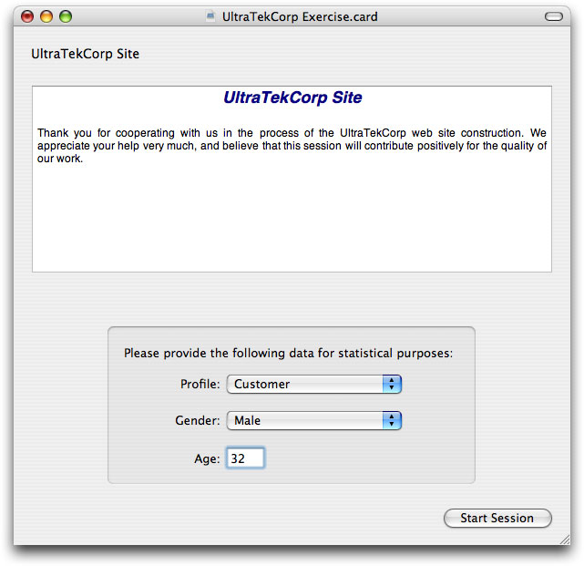
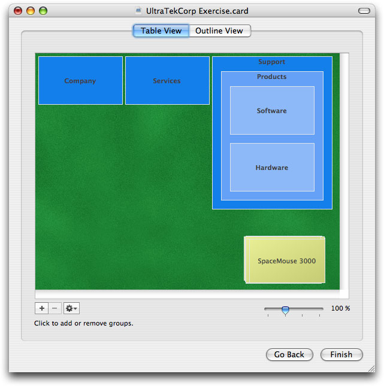
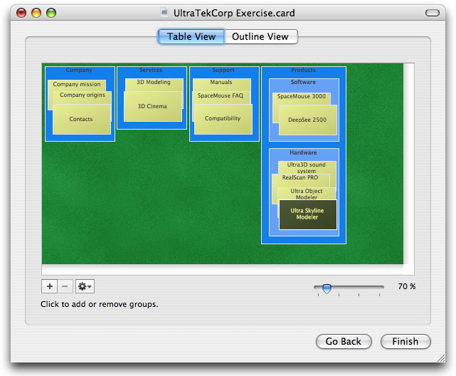
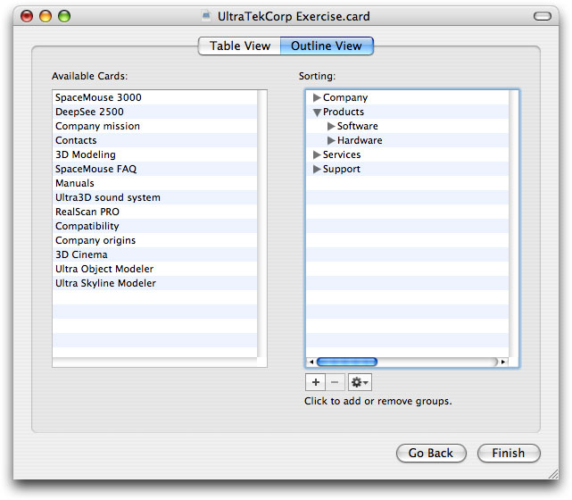
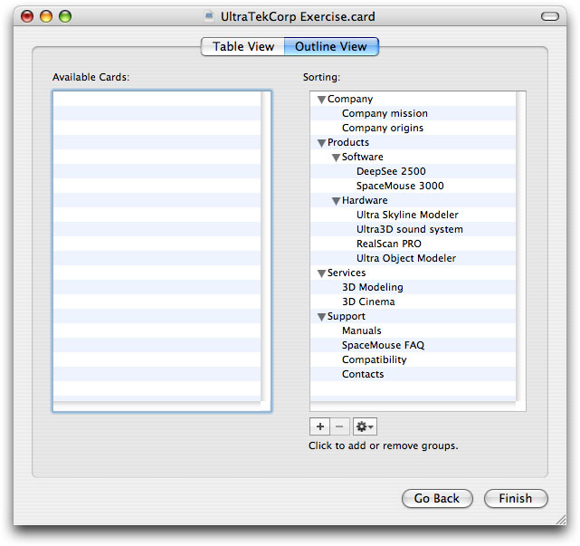
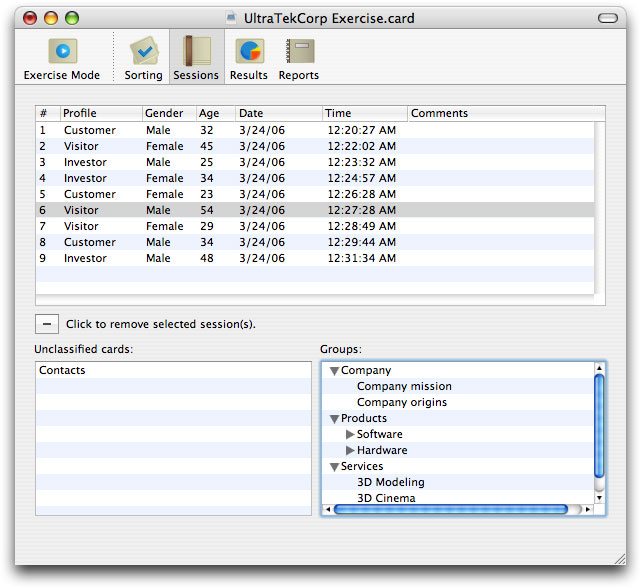

In order to perform a card sorting session, you need to:
Following is the description of the procedure to conduct a card sorting session using the graphical view.
1. If necessary, open a xSort document, or follow the steps on the last chapter to create a new card sorting exercise.
2. On the toolbar, click on the Exercise Mode button, OR choose Enter Exercise Mode from the Exercise menu.
You’ll see the a window similar to the following one. If you have not defined the security settings before, xSort may ask you to define them now. Read step 10 of the previous chapter for more information.
At this point, you should ask a participant to sit in front of the computer running xSort, and ask him to read the Welcome Message present on the text area. After reading, ask the participant to fill in it’s profile, gender and age on the bottom part of the window. You may select the profile yourself, as the participant may not be sure of what is his profile.
3. Click on the Start Session button on the bottom of the window. If necessary, click the Table View tab on the top of the resulting window.
You should see a window like the following one. The graphical view simulates a table with cards. Depending on your problem settings, you may already have several groups (represented by blue cards).
Note that, in the image, all the cards are stacked in the corner. This happens because we had chosen Stacked in the Card Placement option on the exercise definition, in the previous chapter.
4. (Optionally) Ask the participant to create, rename or remove groups. You may only do these operations on open or semi-open exercises.
To add a group, click on the “+” button. All the selected items will be automatically added to the new group.
To remove a group, select it and click on t he “-” button.
To rename a group, double-click on it, or select it and choose Rename Group… from the actions pop-up menu (the little gear button next to the “-” button). If the exercise allows sub-groups, the participant may drag groups inside other groups, forming sub-groups up to five levels.
5. Ask the participant to drag the cards over the groups he thinks they belong to.
Depending on the exercise settings, users may or may not leave some ungrouped cards on the table. You’ll end up with a window like the following one.
If the graphical view gets too confusing, the participant may choose Clean Up… on the actions pop-up menu. xSort will mantain all the work done so far, and re-organize the cards on the table.
The participant may also use the zoom control, on the lower right corner of the window, to increase or decrease the size of the cards.
If the participant wants to start all over again, choose Restart Session… from the actions pop-up menu.
6. When the participant finishes the exercise, click on the Finish button.
The session will be added to the document, and if the “Auto-save documents after every session” option is set on the Preferences, the document will be automatically saved to disk.
If you save your document and close it in Exercise Mode, when you open it again it will be opened in Exercise Mode, ready for a new session.
To leave Exercise Mode, you may at any time choose Leave Exercise Mode from the Exercise menu. If you have turned on the password protection, you’ll have to type in your password.
If the participant dislikes, or for some reason is not able to use the graphical view, he may use the alternate view, based on standard Aqua lists and outlines. Following is the procedure to use the alternate view.
1. Follow steps 1 to 3 from the previous procedure.
2. Click on the Outline View tab.
You will see the alternate view, similar to the following image.

3. (Optionally) Ask the participant to create, rename or remove groups. You may only do these operations on open or semi-open exercises.
To add a group, click on the “+” button.
To remove a group, select it and click on the “-” button.
To rename a group, double-click on it and edit it’s name.
If the exercise allows sub-groups, the participant may drag groups inside other groups, forming sub-groups up to five levels.
4. Ask the participant to drag the cards on the left to the groups on the right.
Depending on the exercise settings, users may or may not leave some ungrouped cards on the list. You’ll end up with a window like the following.
If the participant wants to start all over again, choose Restart Session… from the actions pop-up menu.
5. When the participant finishes the exercise, click on the Finish button.
The session will be added to the document, and if the “Auto-save documents after every session” option is set on the Preferences, the document will be automatically saved to disk.
xSort allows you to browse through previously saved sessions, and see each session individually. Also, you may write a short comment for each session.
To browse through the saved sessions, do the following:
1. Click on the Sessions button on the toolbar, OR choose Sessions from the Exercise menu.
2. Select any session you want to have a detailed view on.
You will see on the lower left list the unclassified cards of that session, and on the lower right outline view the several groups arranged by the participant.
To write a comment related to a session:
1. Click on the Sessions button on the toolbar, OR choose Sessions from the Exercise menu.
2. Select the session you want to comment.
3. Double click on the Comments zone of the selected line, and write the comment. Press Return to finish.
To remove a session:
1. Click on the Sessions button on the toolbar, OR choose Sessions from the Exercise menu.
2. Select the sessions you want to remove.
3. Click on the “-” sign to remove the selected sessions.
Sometimes you may need to perform the same card sorting exercise on more than one computer at the same time. xSort allows you to do that, by importing sessions saved on other documents. Using this technique, you may, for example, conduct an exercise in a computer laboratory, with several participants performing sessions at the same time, on different computers.
To perform sessions on more than one computer:
1. Create a card sorting exercise, as explained on the previous chapter.
2. Save the file containing the card sorting exercise to your hard drive.
It’s recommended that you save your problem in exercise mode. This way, when you or the participants open the document, it will be immediately ready for performing a session.
3. Copy the file to the other computers participants will use.
You may copy the file using Personal File Sharing (using a network that connects all the computers), burning it on a CD or DVD, using an USB pen-drive or an iPod, or any other method you like.4. Launch xSort and open the document on all the computers.
5. Perform as many sessions as you like on all the computers, the same way as explained before in this chapter. Save the files when you finish.
6. When finished, bring back the files to your computer.
7. Open one of the files using xSort on your computer.
8. For each file (except the one you opened), choose Sessions… from the Import sub-menu in the File menu.
9. Use the Mac OS X open panel to locate the files that contain sessions you want to import.
xSort will import the sessions and join them to the original file (the first one you opened).
Note that xSort may only import sessions from similar documents. This means that the document must contain exactly the same cards, groups and profiles. You cannot change the problem definition on any of the documents, or you will not be able to import the sessions contained on it.